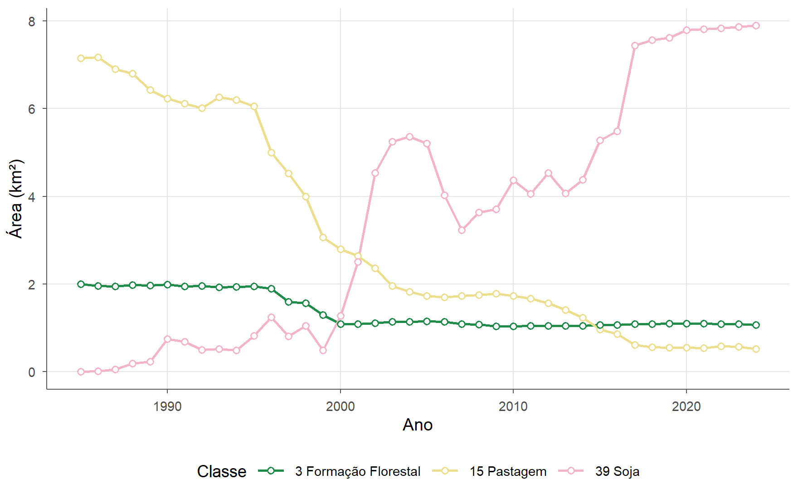
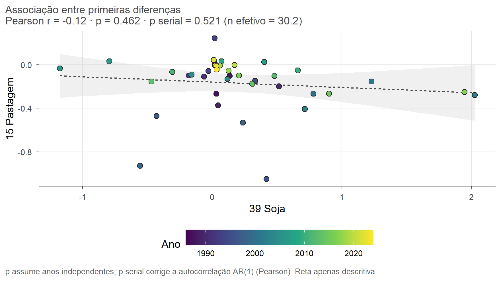
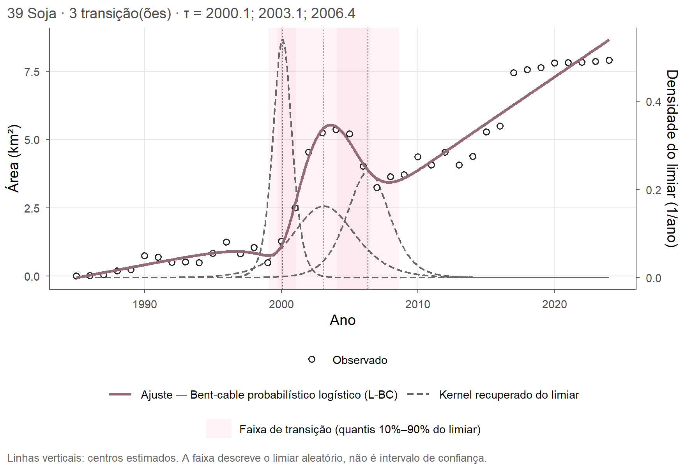
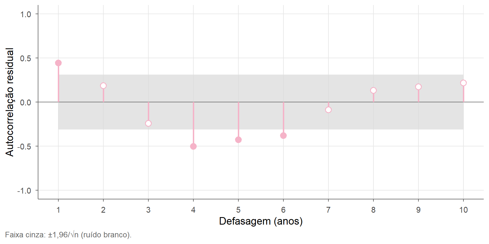
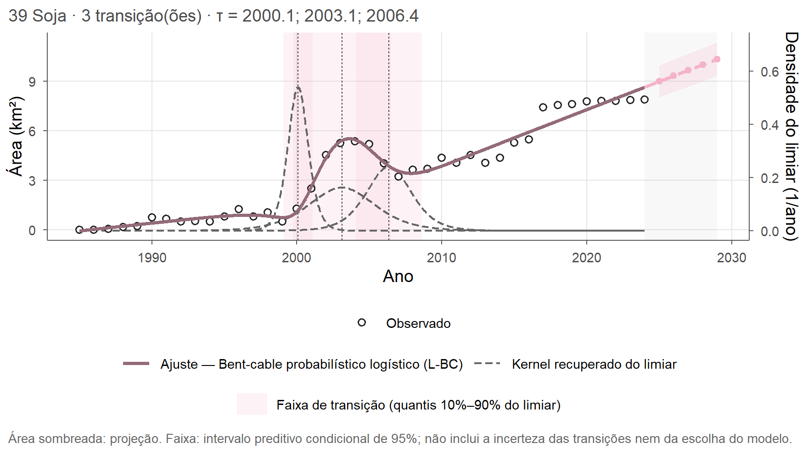

Capítulo 7 Séries temporais
Os mapas anuais formam, para cada classe, uma série de 40 anos.
land_time_series() separa as séries de interesse, aqui soja (39), pastagem (15)
e formação florestal (3):
series <- land_time_series(areas$time_series, classes = c(39, 15, 3))
series$plot
Associação entre duas séries
Duas séries com tendência costumam parecer associadas mesmo quando não têm
relação de um ano para o outro. Por isso, series_correlation() permite medir a
associação nos níveis, nas diferenças anuais ou nos resíduos de uma tendência, e
corrige o p-valor pela autocorrelação:
correlacao <- series_correlation(series, 39, 15, transformation = "difference")
correlacao$plots$association
Nas diferenças anuais, a correlação entre soja e pastagem é de r = -0,12 (p = 0,46; p corrigido = 0,52). Ou seja, a substituição de uma classe pela outra é evidente nos níveis, ao longo de vários anos, mas as variações de um ano para o outro não andam juntas.
Regimes e pontos de mudança
series_fit_regime() ajusta uma curva contínua com transições entre regimes. O
modelo bent-cable probabilístico estima quando cada transição acontece e quanto
tempo ela dura, com intervalos de confiança obtidos por bootstrap:
ajuste <- series_fit_regime(series, 39, model = "prob_bent_logistic",
bootstrap = 200, seed = 1)
ajuste$plot
| Transição | Ano | IC 95% inferior | IC 95% superior | Taxa antes (km²/ano) | Taxa depois (km²/ano) |
|---|---|---|---|---|---|
| 1 | 2000,08 | 1999,48 | 2000,62 | 0,10 | 3,59 |
| 2 | 2003,11 | 2002,61 | 2003,96 | 3,59 | -2,97 |
| 3 | 2006,35 | 2005,78 | 2007,91 | -2,97 | 0,34 |
A história da soja tem três transições, todas entre 2000
e 2007: primeiro uma expansão rápida, de
3,6 km² por ano, depois uma retração e, a partir de
2006, um crescimento lento. Com model = "auto", a função
compara os modelos disponíveis pelo AICc e escolhe o mais adequado.
Diagnóstico e projeção
diagnostico <- series_diagnostics(ajuste)
diagnostico$plots$acf
O ajuste explica 98% da variação (R²), mas os
resíduos são autocorrelacionados (Durbin-Watson = 1,03;
Ljung-Box, p < 0,001).
Quando os resíduos dependem uns dos outros, os intervalos tendem a sair
estreitos demais. Nesse caso, bootstrap_type = "block" reamostra blocos de
anos consecutivos e produz intervalos mais realistas.
Por fim, series_forecast() prolonga o último regime:
projecao <- series_forecast(ajuste, horizon = 5)
projecao$plot
A projeção supõe que o regime atual continue. Ela deve ser lida como um cenário, e não como uma previsão de mudanças futuras no uso da terra.